ДВИГАТЕЛЬ В СБОРЕ > СНЯТИЕ |
| 1. СОБЕРИТЕ ХЛАДАГЕНТ ИЗ СИСТЕМЫ ОХЛАЖДЕНИЯ (для моделей с системой охлаждения) |
Запустите двигатель.
Включите компрессор системы кондиционирования в следующих условиях:
| Параметр / Устройство | Состояние |
| Частота вращения коленчатого вала двигателя | Холостой ход |
| Время работы | 3 мин или более |
| Состояние выключателя системы кондиционирования | Вкл |
| Состояние переключателя вентилятора | HI |
| Заданная температура | MAX COOL |
Выключите двигатель.
Соберите хладагент из системы кондиционирования с помощью установки регенерации хладагента.
| 2. СБРОСЬТЕ ДАВЛЕНИЕ В ТОПЛИВНОЙ СИСТЕМЕ |
Сбросьте давление в топливной системе (Нажмите здесь).
| 3. ОТСОЕДИНИТЕ ПРОВОД ОТ ОТРИЦАТЕЛЬНОГО ВЫВОДА АККУМУЛЯТОРНОЙ БАТАРЕИ |
| 4. СНИМИТЕ КАПОТ В СБОРЕ |
Отсоедините шланг форсунки омывателя.
 |
Выверните 8 болтов и снимите капот.
| 5. СНИМИТЕ УЗЕЛ ВЕНТИЛЯЦИОННОЙ РЕШЕТКИ В ВЕРХНЕЙ ЧАСТИ КОЖУХА |
Снимите вентиляционную решетку в верхней части кожуха (Нажмите здесь).
| 6. СНИМИТЕ НИЖНЮЮ НАКЛАДКУ ПЕРЕДНЕГО БАМПЕРА |
Освободите фиксатор, выверните 5 болтов и снимите нижнюю облицовку переднего бампера.
| 7. СНИМИТЕ ЗАЩИТУ КАРТЕРА ДВИГАТЕЛЯ № 1 В СБОРЕ |
Выверните 4 болта.
 |
Отсоедините защиту картера двигателя от кузова автомобиля, как показано на рисунке.
| 8. СНИМИТЕ НИЖНЮЮ КРЫШКУ ТРАНСМИССИИ |
Выверните 2 болта и снимите нижнюю крышку трансмиссии.
| 9. СНИМИТЕ ЗАДНЮЮ НИЖНЮЮ КРЫШКУ ДВИГАТЕЛЯ В СБОРЕ |
Выверните 4 болта и снимите заднюю защиту картера двигателя.
| 10. СНИМИТЕ УПЛОТНЕНИЕ ФАРТУКА ЛЕВОГО ПЕРЕДНЕГО КРЫЛА |
Освободите 5 фиксаторов и снимите уплотнение фартука переднего крыла.
| 11. СНИМИТЕ УПЛОТНЕНИЕ ФАРТУКА ПРАВОГО ПЕРЕДНЕГО КРЫЛА |
Освободите 5 фиксаторов и снимите уплотнение фартука переднего крыла.
| 12. СНИМИТЕ УПЛОТНЕНИЕ № 1 МЕЖДУ ФАРТУКОМ ЛЕВОГО ПЕРЕДНЕГО КРЫЛА И РАМОЙ |
Освободите 5 фиксаторов и снимите уплотнение между фартуком переднего крыла и рамой № 1.
| 13. СНИМИТЕ УПЛОТНЕНИЕ № 1 МЕЖДУ ФАРТУКОМ ПРАВОГО ПЕРЕДНЕГО КРЫЛА И РАМОЙ |
Освободите 5 фиксаторов и снимите уплотнение между фартуком переднего крыла и рамой № 1.
| 14. СНИМИТЕ ВЕРХНЕЕ УПЛОТНЕНИЕ КРОНШТЕЙНА РАДИАТОРА |
Освободите 13 фиксаторов и снимите верхнее уплотнение кронштейна радиатора.
| 15. СЛЕЙТЕ МОТОРНОЕ МАСЛО |
Снимите крышку маслоналивной горловины.
Снимите пробку сливного отверстия масляного поддона и слейте моторное масло в резервуар.
Установите новую прокладку и пробку сливного отверстия масляного поддона.
| 16. СЛЕЙТЕ ОХЛАЖДАЮЩУЮ ЖИДКОСТЬ ДВИГАТЕЛЯ |

| *1 | Пробка расширительного бачка | *2 | Пробка радиатора |
| *3 | Пробка сливного крана радиатора | *4 | Пробка сливного крана блока цилиндров |
Ослабьте пробку сливного крана радиатора.
Снимите пробку радиатора и слейте охлаждающую жидкость.
Ослабьте 2 пробки сливных кранов блока цилиндров и слейте охлаждающую жидкость из двигателя.
| 17. ОТСОЕДИНИТЕ ПРОВОД ОТ ПОЛОЖИТЕЛЬНОГО ВЫВОДА АККУМУЛЯТОРНОЙ БАТАРЕИ |
| 18. СНИМИТЕ ПРИЖИМ АККУМУЛЯТОРНОЙ БАТАРЕИ |
 |
Ослабьте 2 гайки и снимите прижим аккумуляторной батареи.
| 19. СНИМИТЕ АККУМУЛЯТОРНУЮ БАТАРЕЮ |
| 20. СНИМИТЕ ЛОТОК АККУМУЛЯТОРНОЙ БАТАРЕИ |
| 21. СНИМИТЕ ДЕКОРАТИВНУЮ КРЫШКУ V-ОБРАЗНОГО ДВИГАТЕЛЯ |
 |
Поднимите переднюю часть декоративной крышки V-образного двигателя, чтобы открепить 2 штифта. Затем снимите 2 крюка декоративной крышки V-образного двигателя с кронштейна, чтобы снять декоративную крышку V-образного двигателя.
| *1 | Штифт |
| *2 | Крюк |
| 22. СНИМИТЕ НАКЛАДКУ ПЕРЕДНЕГО БАМПЕРА |
Снимите облицовку переднего бампера (Нажмите здесь).
| 23. СНИМИТЕ ШЛАНГ И КРЫШКУ ВОЗДУШНОГО ФИЛЬТРА |
 |
Снимите крышку и шланг воздушного фильтра.
Отсоедините разъем датчика массового расхода воздуха, вакуумный шланг, вентиляционный шланг и 4 хомута.
Ослабьте хомут.
Отсоедините 4 откидных защелки, выверните болт и снимите крышку и шланг воздушного фильтра.
| 24. СНИМИТЕ КОРПУС ВОЗДУШНОГО ФИЛЬТРА В СБОРЕ |
Снимите фильтрующий элемент воздушного фильтра.
 |
Освободите зажим жгута проводов.
Выверните 3 болта и снимите корпус воздушного фильтра.
| 25. СНИМИТЕ ВЕРХНИЙ ДЕРЖАТЕЛЬ ПЕРЕДНЕГО БАМПЕРА |
| 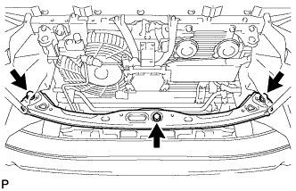 |
Выверните 3 болта и снимите держатель.
| 26. СНИМИТЕ ПРАВЫЙ БОКОВОЙ ОТРАЖАТЕЛЬ РАДИАТОРА |
 |
Используя съемник фиксаторов, открепите 3 захвата и снимите фиксатор. Затем сдвиньте боковой отражатель так, чтобы можно было снять радиатор.
| 27. СНИМИТЕ ЛЕВЫЙ БОКОВОЙ ОТРАЖАТЕЛЬ РАДИАТОРА |
 |
Используя съемник фиксаторов, открепите 3 захвата и снимите фиксатор. Затем сдвиньте боковой отражатель так, чтобы можно было снять радиатор.
| 28. СНИМИТЕ ПАТРУБОК РАДИАТОРА № 1 |
 |
| 29. СНИМИТЕ ПАТРУБОК РАДИАТОРА № 2 |
 |
Отсоедините патрубок радиатора от впускного патрубка охлаждающей жидкости.
 |
Открепите зажим и снимите шланг радиатора.
| 30. СНИМИТЕ РАСШИРИТЕЛЬНЫЙ БАЧОК РАДИАТОРА |
| 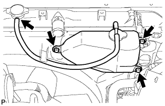 |
Отсоедините шланг расширительного бачка от верхней стороны бака радиатора.
Выверните 3 болта и снимите расширительный бачок радиатора.
| 31. ОТСОЕДИНИТЕ ТРУБКУ МАСЛЯНОГО РАДИАТОРА (для моделей с подогревателем) |
 |
Открепите захват, чтобы разомкнуть зажим гибкого шланга, и затем выверните 2 болта и отсоедините патрубок масляного радиатора от кожуха вентилятора.
| 32. ОТСОЕДИНИТЕ ТРУБКУ МАСЛЯНОГО РАДИАТОРА (для моделей с масляным радиатором трансмиссии с воздушным охлаждением) |
 |
Открепите захват, чтобы разомкнуть зажим гибкого шланга, и затем выверните 2 болта и отсоедините патрубок масляного радиатора от кожуха вентилятора.
| 33. СНИМИТЕ КОЖУХ ВЕНТИЛЯТОРА |
 |
Ослабьте 4 гайки, крепящие вентилятор вискомуфты.
Снимите поликлиновой ремень вентилятора и генератора (Нажмите здесь).
 |
Выверните 2 болта, крепящие кожух вентилятора.
Отверните 4 гайки вентилятора вискомуфты, а затем снимите кожух вместе с вентилятором вискомуфты.
Снимите шкив вентилятора с насоса системы охлаждения.
| 34. СНИМИТЕ РАДИАТОР В СБОРЕ |
 |
Для моделей с автоматической трансмиссией:
Отсоедините 2 шланга масляного радиатора.
| *A | Для моделей с подогревателем |
| *B | Для моделей с масляным радиатором трансмиссии с воздушным охлаждением |
| 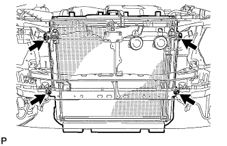 |
Выверните 4 болта и снимите радиатор.
| 35. СНИМИТЕ ВОЗДУШНЫЙ ПАТРУБОК В СБОРЕ (для моделей со вспомогательной системой подачи воздуха в нейтрализатор) |
 |
для ряда 1:
Выверните болт и отсоедините воздушный патрубок от комплекта клапана системы снижения токсичности отработавших газов.
для ряда 2:
Выверните 2 болта и отсоедините воздушный патрубок от комплекта клапана системы снижения токсичности отработавших газов № 2.
| 36. СНИМИТЕ РАСШИРИТЕЛЬНЫЙ БАЧОК НА ВПУСКЕ ВОЗДУХА |
 |
Отсоедините разъем корпуса дроссельной заслонки.
Отсоедините перепускной шланг охлаждающей жидкости № 4.
Отсоедините перепускной шланг охлаждающей жидкости № 5.
 |
Отсоедините питающий шланг паров топлива № 1.
Отсоедините разъем электровакуумного клапана № 1.
Отсоедините шланг вентиляции картера № 1.
Отсоедините 2 хомута шланга отопителя.
 |
Выверните 2 болта и снимите кронштейн корпуса дроссельной заслонки.
 |
С помощью съемника фиксаторов отсоедините зажим жгута проводов.
 |
Выверните 2 болта и снимите стойку расширительного бачка № 1.
 |
Выверните 2 болта и снимите стойку расширительного бачка № 2.
Отверните 2 гайки, выверните 4 болта и снимите расширительный бачок на впуске воздуха
Снимите прокладку.
| 37. СНИМИТЕ ПОЛИКЛИНОВОЙ РЕМЕНЬ ВЕНТИЛЯТОРА И ГЕНЕРАТОРА |
| 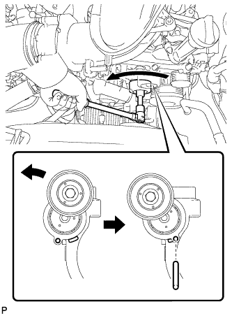 |
Поворачивая натяжитель ремня против часовой стрелки, расположите технологическое отверстие для натяжителя ремня в месте крепления натяжителя ремня, а затем вставьте в технологическое отверстие стержень диаметром 6 мм (0,236 дюйма), чтобы закрепить натяжитель на месте.
Снимите поликлиновой ремень.
| 38. ОТСОЕДИНИТЕ ЛОПАСТНОЙ НАСОС В СБОРЕ |
Отсоедините 2 разъема.
Отсоедините 2 зажима жгута проводов.
 |
Выверните 2 болта и отсоедините лопастной насос.
| 39. ОТСОЕДИНИТЕ ТРУБОПРОВОД ВЫСОКОГО ДАВЛЕНИЯ (для моделей с системой кондиционирования) |
Выверните болт и отсоедините трубопровод высокого давления от компрессора системы кондиционирования.
| *A | кроме моделей с кодами GRJ150L-GKFEKV, GRJ150L-GKAEKV |
| *B | для моделей с кодами GRJ150L-GKFEKV, GRJ150L-GKAEKV |
Снимите с трубопровода высокого давления кольцевое уплотнение.
| 40. ОТСОЕДИНИТЕ ТРУБОПРОВОД НИЗКОГО ДАВЛЕНИЯ (для моделей с системой кондиционирования) |
Выверните 2 болта и отсоедините трубопровод низкого давления от компрессора системы кондиционирования.
| *A | кроме моделей с кодами GRJ150L-GKFEKV, GRJ150L-GKAEKV |
| *B | для моделей с кодами GRJ150L-GKFEKV, GRJ150L-GKAEKV |
Снимите с трубопровода низкого давления кольцевое уплотнение.
| 41. СНИМИТЕ КОМПРЕССОР СИСТЕМЫ КОНДИЦИОНИРОВАНИЯ В СБОРЕ (для моделей с системой кондиционирования) |
Отсоедините разъем.
Выверните 3 болта, отверните гайку и снимите компрессор системы кондиционирования.
Выверните резьбовую шпильку.
| 42. СНИМИТЕ ОПОРНЫЙ РОЛИК В СБОРЕ (для моделей без системы кондиционирования) |
Выверните 3 болта и снимите опорный ролик.
| 43. СНИМИТЕ ПРИЕМНУЮ ТРУБУ В СБОРЕ |
Снимите приемную трубу (Нажмите здесь).
| 44. СНИМИТЕ ОПОРУ КОЛЛЕКТОРА |
 |
Отверните 3 болта и снимите опору коллектора.
| 45. СНИМИТЕ ВОЗДУШНЫЙ ПАТРУБОК (для моделей со вспомогательной системой подачи воздуха в нейтрализатор) |
 |
Выверните 2 болта, отверните 2 гайки и снимите воздушный патрубок.
Снимите 2 прокладки с воздушного патрубка.
| 46. ОТСОЕДИНИТЕ ПРОМЕЖУТОЧНЫЙ ВАЛ № 2 РУЛЕВОГО УПРАВЛЕНИЯ В СБОРЕ (для моделей с правосторонним рулевым управлением) |
Для моделей с наклонной телескопической рулевой колонкой с ручным приводом:
Отсоедините промежуточный вал № 2 рулевого управления (Нажмите здесь).
Для моделей с наклонной телескопической рулевой колонкой с электроприводом:
Отсоедините промежуточный вал № 2 рулевого управления (Нажмите здесь).
| 47. СНИМИТЕ ТЕПЛОЗАЩИТНЫЙ ЭКРАН ВЫПУСКНОГО КОЛЛЕКТОРА № 1 |
 |
Отверните 3 болта и снимите теплозащитный экран.
| 48. СНИМИТЕ ПРАВЫЙ ВЫПУСКНОЙ КОЛЛЕКТОР В СБОРЕ |
 |
Для моделей с системой дополнительной подачи воздуха в нейтрализатор:
Отсоедините разъем датчика состава топливовоздушной смеси.
Отверните 6 гаек и снимите коллектор и прокладку.
| 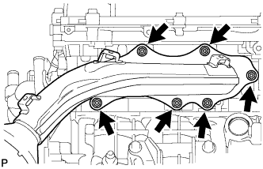 |
Для моделей без системы дополнительной подачи воздуха в нейтрализатор:
Отсоедините разъем датчика состава топливовоздушной смеси.
Отверните 6 гаек и снимите коллектор и прокладку.
| 49. СНИМИТЕ ОПОРУ КОЛЛЕКТОРА № 2 |
| 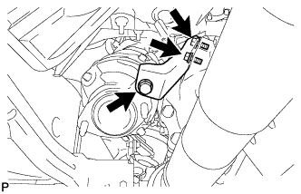 |
Выверните 3 болта и снимите опору коллектора № 2.
| 50. СНИМИТЕ ВОЗДУШНЫЙ ПАТРУБОК № 2 (для моделей со вспомогательной системой подачи воздуха в нейтрализатор) |
 |
Выверните 2 болта, отверните 2 гайки и снимите воздушный патрубок № 2.
Снимите 2 прокладки с воздушного патрубка № 2.
| 51. СНИМИТЕ ТЕПЛОЗАЩИТНЫЙ ЭКРАН ВЫПУСКНОГО КОЛЛЕКТОРА № 2 |
 |
Отверните 3 болта и снимите теплозащитный экран.
| 52. СНИМИТЕ ЛЕВЫЙ ВЫПУСКНОЙ КОЛЛЕКТОР В СБОРЕ |
 |
Для моделей с системой дополнительной подачи воздуха в нейтрализатор:
Отсоедините разъем датчика состава топливовоздушной смеси.
Отверните 6 гаек и снимите коллектор и прокладку.
| 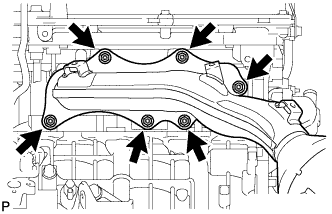 |
Для моделей без системы дополнительной подачи воздуха в нейтрализатор:
Отсоедините разъем датчика состава топливовоздушной смеси.
Отверните 6 гаек и снимите коллектор и прокладку.
| 53. СНИМИТЕ КРОНШТЕЙН ЗАЖИМА ЖГУТА ПРОВОДОВ |
 |
Снимите зажим.
Выверните болт и снимите кронштейн зажима жгута проводов.
| 54. СНИМИТЕ ГЕНЕРАТОР В СБОРЕ |
Откройте крышку контакта.
Отверните гайку и отсоедините жгут проводов от контакта B.
Отсоедините разъем генератора от генератора в сборе.
 |
Выверните 2 болта и отсоедините жгут проводов.
 |
Отсоедините зажим жгута проводов.
Выверните болт и отсоедините кронштейн генератора.
Выверните 2 болта и снимите генератор в сборе.
 |
Выверните болт и снимите кронштейн генератора.
| 55. СНИМИТЕ СТАРТЕР В СБОРЕ |
| 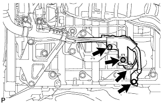 |
Выверните болт и отсоедините провод соединения с массой.
Отсоедините разъем стартера.
Откройте крышку контакта.
Отверните гайку, выверните болт и отсоедините провод стартера.
| 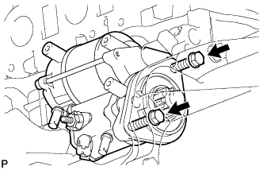 |
Выверните 2 болта и снимите стартер.
| 56. ВЫВЕРНИТЕ УСТАНОВОЧНЫЙ БОЛТ ВЕДУЩЕГО ДИСКА И МУФТЫ ГИДРОТРАНСФОРМАТОРА (для моделей с автоматической трансмиссией) |
 |
Снимите боковую крышку картера маховика.
| 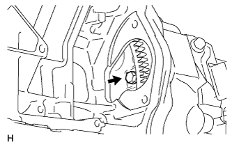 |
Проверните коленчатый вал, чтобы обеспечить доступ к 6 болтам, и, удерживая ключом болт шкива коленчатого вала, выверните каждый из болтов.
| 57. ОТСОЕДИНИТЕ ЖГУТ ПРОВОДОВ ДВИГАТЕЛЯ |
Выверните болт и отсоедините разъем.
Снимите дверцу перчаточного ящика в сборе (Нажмите здесь).
Отсоедините разъем ЭБУ.
 |
Расцепите зажим и отсоедините 9 разъемов.
| *A | Для моделей с левосторонним рулевым управлением |
| *B | Для моделей с правосторонним рулевым управлением |
 |
Отсоедините уплотнительную шайбу от опоры жгута проводов.
| *A | Для моделей с левосторонним рулевым управлением |
| *B | Для моделей с правосторонним рулевым управлением |
 |
Освободите 4 захвата, чтобы снять опору жгута проводов с автомобиля, а затем вытяните разъем ECM, чтобы снять его с автомобиля.
| *A | Для моделей с левосторонним рулевым управлением |
| *B | Для моделей с правосторонним рулевым управлением |
| 58. ОТСОЕДИНИТЕ ПАТРУБОК ОТОПИТЕЛЯ В СБОРЕ |
Для моделей без заднего подогревателя:
Отсоедините 2 шланга и патрубок отопителя.
| *A | Для моделей без заднего подогревателя |
| *B | Для моделей с задним подогревателем |
Для моделей с задним подогревателем:
Отсоедините 4 шланга и патрубок отопителя.
| 59. ОТСОЕДИНИТЕ ТОПЛИВОПРОВОДЫ № 1 И № 2 |
Снимите зажим топливопровода № 2 с разъема топливопровода.
Отсоедините топливопроводы № 1 и № 2 (Нажмите здесь).
| 60. СНИМИТЕ ПЕРЕДНИЙ КАРДАННЫЙ ВАЛ В СБОРЕ |
| 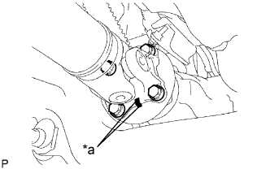 |
Нанесите метки на фланец карданного вала и дифференциал.
| *a | Метка |
Снимите 4 гайки, 4 болта, 4 шайбы и передний карданный вал в сборе.
 |
Нанесите метки на фланец карданного вала и фланец раздаточной коробки.
| *a | Метка |
Отверните 4 гайки и снимите 4 шайбы и передний карданный вал в сборе.
| 61. СНИМИТЕ КАРДАННЫЙ ВАЛ В СБОРЕ |
 |
Нанесите метки на фланец карданного вала и фланец раздаточной коробки.
| *A | Для 3-дверных моделей: |
| *B | Для 5-дверных моделей: |
| *a | Метка |
Отверните 4 гайки и снимите 4 шайбы.
 |
Нанесите метки на фланец карданного вала и фланец дифференциала.
| *A | Для 3-дверных моделей: |
| *B | Для 5-дверных моделей: |
| *a | Метка |
Отверните 4 гайки и снимите 4 болта и 4 шайбы.
Снимите карданный вал.
| 62. СНИМИТЕ МЕХАНИЧЕСКУЮ ТРАНСМИССИЮ В СБОРЕ (для моделей с механической трансмиссией) |
Снимите механическую трансмиссию с автомобиля (Нажмите здесь).
| 63. СНИМИТЕ АВТОМАТИЧЕСКУЮ ТРАНСМИССИЮ В СБОРЕ (для моделей с автоматической трансмиссией) |
Снимите автоматическую трансмиссию с автомобиля (Нажмите здесь).
| 64. СНИМИТЕ ПОДУШКУ ЗАДНЕЙ ОПОРЫ ДВИГАТЕЛЯ № 1 (для моделей с автоматической трансмиссией) |
 |
Выверните болт и снимите теплозащитный экран задней опоры двигателя.
Выверните 4 болта и снимите подушку задней опоры двигателя с трансмиссии.
| 65. СНИМИТЕ ПОДУШКУ ЗАДНЕЙ ОПОРЫ ДВИГАТЕЛЯ № 1 (для моделей с механической трансмиссией) |
 |
Выверните 4 болта и снимите подушку опоры двигателя с механической трансмиссии.
| 66. ОТСОЕДИНИТЕ ТРУБОПРОВОД НИЗКОГО ДАВЛЕНИЯ В СБОРЕ (для моделей с автоматической трансмиссией) |
Выверните болт и отсоедините трубопровод низкого давления.
| 67. ОТСОЕДИНИТЕ ТРУБКУ МАСЛЯНОГО РАДИАТОРА В СБОРЕ (для моделей с автоматической трансмиссией) |
| 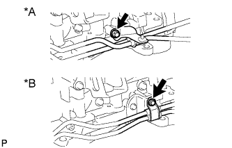 |
Выверните болт и отсоедините трубку масляного радиатора.
| *A | Для моделей без масляного радиатора трансмиссии с воздушным охлаждением |
| *B | Для моделей с масляным радиатором трансмиссии с воздушным охлаждением |
| 68. СНИМИТЕ КОЖУХ СЦЕПЛЕНИЯ В СБОРЕ (для моделей с механической трансмиссией) |
| 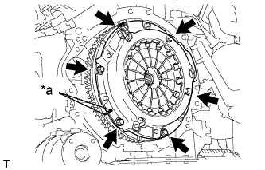 |
Нанесите метки на кожух сцепления и маховик.
| *a | Метка |
Ослабьте все установочные болты, поочередно выворачивая их на один оборот, пока не ослабнет натяжение пружины.
Выверните 6 установочных болтов и снимите кожух сцепления.
| 69. СНИМИТЕ ВЕДОМЫЙ ДИСК СЦЕПЛЕНИЯ В СБОРЕ (для моделей с механической трансмиссией) |
| 70. СНИМИТЕ МАХОВИК В СБОРЕ (для моделей с механической трансмиссией) |
 |
Зафиксируйте коленчатый вал с помощью SST.
Выверните 8 болтов и снимите маховик.
| 71. СНИМИТЕ ВЕДУЩИЙ ДИСК И КОРОННУЮ ШЕСТЕРНЮ В СБОРЕ (для моделей с автоматической трансмиссией) |
|
Зафиксируйте коленчатый вал с помощью SST.
 |
Выверните 8 болтов и снимите заднюю распорную втулку, ведущий диск и переднюю распорную втулку.
| 72. СНИМИТЕ ДВИГАТЕЛЬ В СБОРЕ |
Установите 2 крюка для вывешивания двигателя, закрепив их 4 болтами, как показано на рисунке.
| *1 | Крюк для вывешивания двигателя № 1 |
| *2 | Крюк для вывешивания двигателя № 2 |
| Крюк для вывешивания двигателя № 1 | 12281-31110 |
| Крюк для вывешивания двигателя № 2 | 12282-31140 |
| Болт | 91671-C0830 |
С помощью устройства для подъема двигателя и цепного блока подвесьте двигатель.
Отверните 6 гаек с левой и правой передних подушек опоры двигателя.
Осторожно поднимите двигатель из автомобиля.
Снимите левую и правую передние подушки опоры двигателя.
Поместите двигатель на рабочий стол.
| 73. УСТАНОВИТЕ СТЕНД ДЛЯ ДВИГАТЕЛЯ |
Закрепите двигатель на стенде для двигателя с помощью болтов.